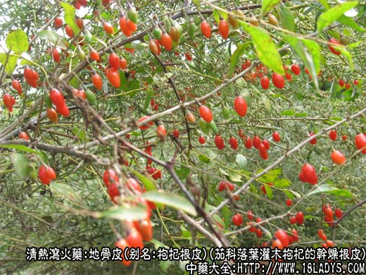
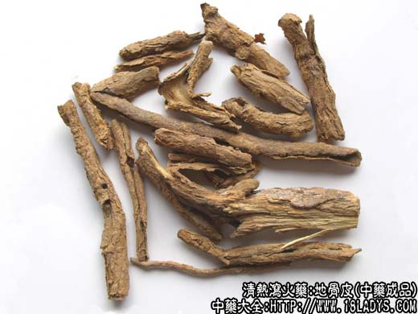
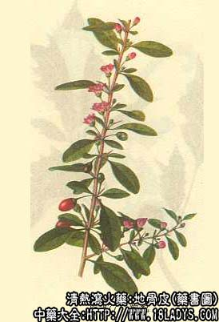

地骨皮为较常用中药，《神农本草经》列为上品，原名“枸杞”。
别名：枸杞根皮。
来源：地骨皮为茄科植物落叶灌木枸杞的干燥根皮。
产地：主产于山西、河南、陕西、甘肃、江苏、浙江等地，全国大部分地区均有生产，多为野生。
性状鉴别：为筒状或半筒状的卷片，大小不一。一般长约4～10厘米，宽1～2厘米，厚约3毫米。外表面棕黄色，粗糙，有错杂的纵裂纹，易剥落。内表面黄白色，有细纵纹。质较脆，易折断。断面外层棕黄色，内层灰白色。气微香稍甜后苦。
以块大，肉厚，无木心杂质者为佳。
主要成分：含甜菜硷、鞣酸等。
功效与作用：主要为解热。
1、解热：长于清解潮热；
2、降压：通过直接扩张血管，有中等度降压作用；3、抗菌：体外试验对金黄色葡萄球菌有抑制作用。
炮制：生用。
性味：甘寒。
归经：入肺，肾经。
功能：清热凉血，退骨蒸潮热。
主治：骨蒸劳热、肺热咳嗽，血热出血症。
临床应用：以去痨热、虚热为主。
1、用于治疗一般虚热和痨热（如肺结核的消耗热）。治有汗的骨蒸，配鳖甲、知母等，方如地骨皮汤。治小儿疳积的发热，也可在此方基础上加减。
2、用于治疗肺热喘咳，间有午后发热（午后四、五时尤其），舌红苔黄，脉细数，包括急性支气管炎、肺炎等的肺热咳嗽，取其有泻肺清热作用，配桑白皮、甘草等，方如泻白散，此方尤其适用于小孩。
使用注意：外感风寒所引起的发热不要用地骨皮，有脾虚便溏者也不要用。
用量：6～12g。
处方举例：1、地骨皮汤（《小儿药证直诀》）：地骨皮9g、鳖甲18g（先煎）、知母9g、银柴胡9g、孩儿参9g、黄芩9g、赤茯苓12g，水煎服。
2、泻白散（《小儿药证直诀》）：地骨皮9g、桑白皮12g、甘草3g、梗米6g，水煎服。
注：1、地骨皮主要为野生枸杞的根皮，其果实称土枸杞，个别地区习用。栽培者，主要用其果实，其根皮很少采用。
2、江苏浙江等省所产地骨皮，呈圆筒状，粗如姆指，整齐皮厚，色较黄，微有香气，质量佳称“南骨皮”多销出口。
3、地骨皮与北五加皮类似，注意区分：
地骨皮：外皮粗糙，内心灰白；味微苦。
北五加皮（杠柳皮）：外皮紧细，内色发黄、香气浓，味极苦。